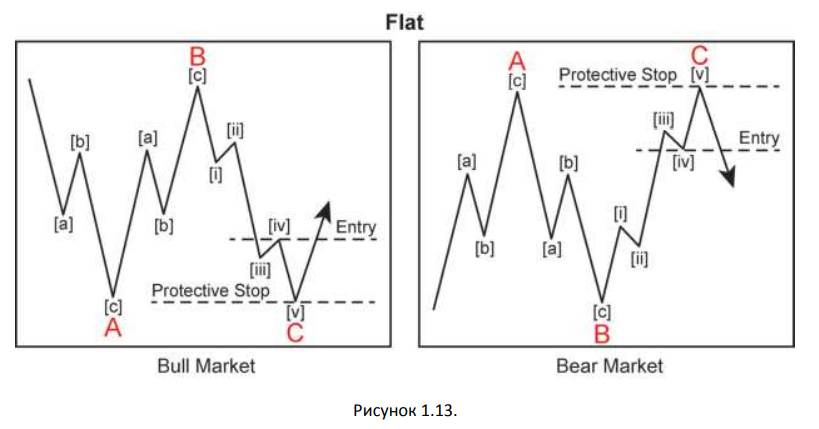

АНАТОМИЯ ТОРГОВЛИ ПО ВОЛНАМ ЭЛЛИОТА
При обучении волновому принципу, я всякий раз начинаю с того, что анализ и торговля
предъявляет различные требования к навыкам. Хоть ты и можешь быть талантливым аналитиком,
это не значит, что ты будешь успешным трейдером и наоборот. Я познал на своем многолетнем
опыте, что что навыки анализа это мастерство наблюдения, в то время как навыки успешного
трейдера это мастерство познания себя опыте, что .
Когда дело доходит до торговли, нет правильного или неправильного пути. Есть только свой путь.
Отношение одного трейдера к риску довольно сильно отличается от другого, также как и
предпочитаемые тайм-фреймы, размеры депозита и рынки, на которых осуществляется торговля,
все это может отличаться. Таким образом, советы, приведенные в данной главе по торговле
специфических моделей волн Эллиотта – просто советы, которые служат мне уже долгие годы.
Мой лучший совет для вас при поиске торговых возможностей: начинать свой поиск с вопроса
«Вижу ли я волновую модель, которую я распознал?». Вам следует найти одну из пяти основных
волновых моделей: импульсную волну, конечную диагональ, зигзаг, плоскость или треугольник.
Эти формы станут основой подготовки к торговле, когда Вы сможете идентифицировать их быстро
и с высокой степенью достоверности.
Есть более простой вопрос, который звучит так: «Я вижу движущую волну или коррекционную?».
Движущие волны определяют направление тренда. Существует два вида движущих волн:
импульсы и конечные диагонали.
импульсы и конечные диагонали. Коррекционные волны развиваются в противоположном
направлении тренда более высокого уровня
импульсы и конечные диагонали. . Коррекционными волнами являются: зигзаги,
плоскости и треугольники. Даже если вы отличаете лишь движущие волны от коррекционных, это
уже может дать Вам много полезных торговых возможностей.
В этой главе мы рассмотрим, как использовать ключевые компоненты анализа и торговли, чтобы
помочь вам стать хорошим волновиком и успешным трейдером. В частности, мы рассмотрим, как
волновой принцип может улучшить вашу торговлю, какие волны являются наилучшими для
торговли, какие принципы следует использовать для торговли конкретных волновых моделей и
почему психология трейдинга и управление капиталом – что я называю предметами первой
необходимости – крайне важны!
Как волновой принцип позволяет улучшить торговлю
Каждый трейдер, каждый аналитик и каждый специалист имеет свои любимые методы, которые использует в торговле. Давайте рассмотрим, почему я предпочитаю волновой принцип.
Как волновой принцип позволяет расширить методы технического анализа
Существует три категории технических индикаторов: индикаторы тренда, осцилляторы,
индикаторы сентимента. Трендовые индикаторы включают в себя: MA, MACD, ADX и пр.
Наиболее популярные осцилляторы, которыми в настоящее время пользуются трейдеры:
Stochastic, Rate-of-change, CCI. Индикаторы сентимента включают в себя: соотношение put-call,
Commitment of Traders.
Технические индикаторы, подобные этим, делают хорошую работу, освещая путь трейдерам, но
ни один из них не отвечает на главный вопрос: они ограничивают понимание трейдера о текущей
цене и как она соотносится с общей картиной рынка? Например, давайте предположим, что
индикатор MACD на некотором рынке XYZ положительный, показывающий направление тренда
вверх. Это полезная информация, но не будет ли более полезным, если бы, если бы он также
помог бы ответить на следующие вопросы: Это новый тренд или нет? Если тренда направлен
вверх, то как далеко он уйдет?
Большинство технических индикаторов просто не раскрывают необходимую информацию, такую
как зрелость тренда, ценовые цели, а волновой принцип – раскрывает.
5 способов, которыми волновой принцип позволяет улучшить торговлю
Здесь представлены 5 способов, как волновой принцип позволяет усовершенствовать вашу торговлю. Волновой принцип:
- Идентифицирует тренд
- Идентифицирует коррекцию к старшему тренду
- Идентифицирует зрелость тренда
- Предоставляет конечные цели ценового движения
- Предоставляет точек отмены разметки
Идентификация тренда
«… движение в том же направлении, что и тренд более высокого уровня, развивается из пяти
волн…» - Волновой принцип Эллиотта – Фрост и Пректер.
Волновой принцип идентифицирует направление доминирующего тренда. Пятиволновое
движение вверх идентифицирует общий тренд вверх. И наоборот, нисходящее пятиволновое
движение говорит о том, что тренд более высокого уровня направлен вниз. Почему эта
информация важна? Потому что значительно проще торговать в направлении доминирующего
тренда, так как это путь наименьшего сопротивления и, несомненно, объясняет поговорку: «Тренд
– твой друг». Я нахожу торговлю по тренду более простой, чем попытки ловить движения против
тренда, что является значительно более сложно задачей.
Идентификация коррекций
«.. коррекция к тренду более высокого уровня развивается из трех волн…» - Волновой принцип
Эллиотта – Фрост и Пректер.
Волновой принцип также идентифицирует коррекционные движения. Трехволновые модели
являются коррекцией к предшествующим импульсным волнам. Знание того, что последнее
движение цены это просто коррекция к основному тренду особенно важно для трейдеров, потому
что коррекции дают трейдерам новые возможности для входа в рынок в направлении основного
тренда на рынке.
Знание трех основных коррекционных моделей – Зигзаги, Плоскости и Треугольники – позволяет
вам покупать на восходящем тренде и продавать в нисходящем, что является проверенной
успешной торговой стратегией. Знание как должна выглядеть та или иная модель дает вам
возможность присоединиться к последующему движению по тренду.
Зрелость тренда
Как заметил Р.Н. Эллиотт, волновые модели образуют большие и меньшие вариации самих себя. Эта повторение видов означат, что ценовое движение это фрактал, как показано на рисунке 1.1. Волна (1), подразделяющаяся на 5 малых волн, сама является частью более крупного пятиволнового движения. Как эта информация может быть полезна? Она позволяет трейдерам распознать зрелость тренда. Если, например, цена продвигается в волне 5 пятиволнового роста, и в волне 5 уже завершены три или четыре более мелких волн, то трейдер знает, что это может быть не лучшим временем для открытия или добавления длинной позиции. Это хорошее время для снятия прибыли или, как минимум для переноса защитных стопов.
Так как волновой принцип идентифицирует направление тренда, коррекцию и зрелость тренда, не сюрприз, что волновой принцип сигнализирует и о возвращении доминирующего тренда. После того как коррекция сформировалась составе трех волн (А-В-С), это может означать о продолжении доминирующего тренда, а именно как только цена пробьет экстремум волны В. Знание того, что доминирующий тренд продолжится, приносит дополнительную пользу: это повышает вероятность успешной торговли, которая только усиливается поддержкой технических индикаторов.
Идентификация целей
Что традиционный технический анализ в отличии от волнового анализа просто не предоставляет, так это достоверные сведения о ценовых целях . Когда Р.Н. Эллиотт писал о волновом принципе в законе природы, он отметил, что последовательность Фибоначчи была математической основой волнового принципа. волнового принципа. Волны Эллиотта, как импульсные, так и коррекционные придерживаются определенных соотношений Фибоначчи волнового принципа. . Например, все три движущие волны, как правило, связаны соотношениями Фибоначчи, будь то равенство, 1.618 или 2.618 (и их обратные значения 0.618 и 0.382). См. рисунки 1.2, 1.3 и 1.4.
Кроме того, коррекции довольно часто откатываются на некоторые уровни Фибоначчи от предыдущей волны. Эти уровни позволяют трейдерам устанавливать цели для профитов и идентифицируют области, где цена может развернуться (см. рисунки 1.5, 1.6).
Точки отмены разметки
Волновой анализ предоставляет специфические точки отмены развивающегося сценария, где волновая разметка более не может считаться корректной. Информация о том, что разметка не верна, пожалуй, может считаться одной из самых важных. В какой точке разметка становится ошибочной? Многие трейдеры используют правила управления капиталом, чтобы ответить на этот вопрос, потому что технический анализ просто не имеет на него ответа. А у волнового принципа ответ на этот вопрос есть. Приведем правила волнового принципа для импульсных волн:
- Волна 2 никогда не может откатиться более чем на 100 % от волны 1.
- Волна 4 никогда не заходит в ценовой диапазон волны 1.
- Из всех трех волн (волны 1, 3 и 5), волна 3 никогда не может быть самой короткой.
Нарушение любого из вышеуказанных правил говорит о том, что текущая волновая разметка некорректна. Как трейдеру могут воспользоваться данной информацией? Если технические индикаторы предупреждают о подъеме цены, и в настоящее время развивается откат во второй волне, трейдер точно знает, в какой точке сделка потерпит неудачу: движение цены за пределы начала волны 1. К такому выводу трудно прийти без такого инструмента, как волновой принцип.
4 лучших волны для торговли
Волны 3, 5, А и С являются наиболее привлекательными для торговли, потому что они
ориентированы в направлении более старшего тренда. Удача будет благоволить трейдерам,
которые на бычьем рынке находятся в длинной позиции (а на медвежьем рынке – в короткой),
против коротких позиций на на бычьем рынке (и длинных на медвежьем). В целом, торговля в
направлении тренда это путь наименьшего сопротивления.
Волновой принцип помогает отличить торговые возможности с низкой степенью риска от высокой
степенью риска, которые трейдерам не следовало бы игнорировать . Следует помнить, что 5-
тиволновое движение определяет направление старшего тренда, в то время как 3-ех волновое
движение предоставляет возможность трейдерам присоединиться к тренду. Так, на рисунке 1.7,
волны (2), (4), (5) и (В) предоставляют отличные возможности для торговли в волнах (3), (5), (А) и
(С).
Например, откат волны (2) предоставляет трейдерам возможность войти в рынок по направлению
волны (3), тогда как ралли в волне (5) предлагает им возможность для короткой позиции по волне
(А). Комбинируя волновой принцип с традиционным техническим анализом, трейдеры могут
улучшить результаты своей торговли.
Технические индикаторы могут показывать множество торговых возможностей, в то время как
волновой принцип указывает трейдерам, какие из них имеют наибольшие шансы на успех.
Вот почему волновой принцип является инструментом, при помощи которого можно заглянуть в
будущее.
Торговые установки волн Эллиотта
Следующий график (см. рисунок 1.7) демонстрирует бычьи и медвежьи версии торговых установок. В каждом из графиков волны (2), (4), (5) и (В) являются торговыми установками, которые предоставляют 4 основных торговых возможности, основанных на волнах Эллиотта. Эти коррекционные волны предоставляют трейдеру возможность присоединиться к доминирующему тренду. В такой трендовой торговле, трейдер покупает на откатах в восходящем тренде и на отскоках в нисходящем тренде.
Когда торговать коррекции?
Коррекционные волны предоставляют меньше торговых возможностей из-за их потенциальной сложности. Импульсные волны продвигаются по тренду как правило довольно далеко. С другой стороны, коррекционные волны имеют большие колебания и развиваются медленнее, принимая вид различных фигур, таких как зигзаги, плоскости, расширенные плоскости, треугольники, двойные зигзаги или комбинации. Коррекции в основном развиваются в боковом направлении, мало предсказуемы и занимают довольно длительное время. Поэтому торговля коррекционных волн является эмоционально изнурительным занятием и шансы успешной торговли в коррекции являются невысокими.
Ура!!! Я понял!
первый
второй
третий
четвертый
пятый
Хотя я рассматриваю коррекционные волны и модели как не слишком безопасные торговые установки, существуют случаи, когда я готов их рассматривать, но это зависит от потенциальной продолжительности коррекции. Если я разметил пятиволновое движение вверх, например, на 15- минутном графике сырой нефти, я не рассматриваю волны 2 и 4 как торговые возможности. Я предпочитаю, вместо этого, дождаться их окончания для входа в позицию. Однако если рассматривать рынок, который также развивается в импульсной волне, но она развивается в течение нескольких недель или месяцев, то волны 2 и 4 будут формироваться также несколько недель или месяцев и они могут предоставить трейдерам довольно много краткосрочных торговых возможностей.
Руководство по торговле специфических волновых моделей
Перед тем как перейти к обзору рекомендаций по торговле волновых моделей, приведу свое наиболее важное аналитическое и торговое правило: Позволь рынку присоединиться к тебе прежде чем рынку проглотит тебя. Другими словами, ищите подтверждение движения цены. Так же как неразумно выскакивать перед приближающимся автомобилем на основании его сигнала указателя поворота, в равной степени неразумно торговать без подтверждения изменения тренда.
Следующие рекомендации предлагают трейдеру двигаться в двух направлениях. Первое – ожидание подтверждения ценового движения приводит к снижению количества совершенных сделок. Одна из больших ошибок трейдеров – гиперактивность. Второе направление – фокусировать свое внимание на высокодостоверных и безопасных торговых возможностях. Если трейдер считает, что конкретный рынок растет, и цена действительно подтверждает это мнение, то трейдер скорее всего имеет больше шансов на успешную торговлю.
Импульсные волны
Всякий раз, когда импульсная волна сформирована, волновой принцип Эллиотта гласит:
«Коррекции, особенно, кона они сами являются четвертыми волнами, пытаются откатиться на
уровень предыдущей четвертой волны меньшего волнового уровня, чаще всего ближе к уровню
ее окончания.» - Волновой принцип Эллиотта, Фрост и Пректер.
Хотя руководство может показать сложным, ему легко следовать в реальной торговле. Техника
торговли заключается во входе в рынок на прорыве уровня волны (iv) оф 5 (см. Рисунок 1.8). Такое
поведение предохраняет от новых пиков и является первым подтверждением, что импульсная
волна завершена. Защитный стоп должен быть на экстремуме волны 5.
Конечные диагонали
Рекомендации по входу в рынок и установке защитных стопов для конечных диагоналей схожи с импульсными волнами: ожидание пробоя волны 4 перед входом в позицию, и установка защитного стопа на экстремуме ценового движения (см. рисунок 1.9).
Если Вы позиционируете себя как ОЧЕНЬ агрессивный трейдер, то вот техника входа для вас. Значительно чаще волна 3 конечной диагонали короче, чем волна 1. Когда это имеет место быть, основное правило гласит, что волна 5 не может быть больше, чем волна 3, даже если это конечная диагональ, так как волна 3 не может быть самой короткой в импульсе среди волн 1, 3 и 5. Поэтому Вы можете набирать позицию по мере формирования волны 5. Защитный стоп в таком случае должен быть установлен в точке, где волна 5 становится больше волны 3, так как по волновому принципу это и есть точка отрицания данного сценария.
Зигзаг
Первая из двух рекомендаций по входу в рынок для зигзага – на пробое окончания волны [iv] оф С, при условии, что данный уровень перекрывает уровень окончания волны А (см. рисунок 1.11).
Вторая рекомендация по входу в рынок – ожидание пробоя уровня волны В (см. Рисунок 1.12). Защитный стоп в данном случае должен быть установлен на экстремум волны С. Данный консервативный подход защищает от всплесков, которые могут формировать новые вершины (или дно).
В идеале, трейдеры должны принять данные рекомендации и адаптировать их под собственный стиль торговли. В действительности, используя зигзаг в качестве примера, еще более консервативные трейдеры могут ожидать еще больше до формирования пятиволнового движения через экстремум волны B и последующей коррекционной модели.
Плоскость
Так как последняя волна плоской коррекции подразделяется на 5 волн, то рекомендованная техника входа схожа с импульсными волнами: ожидаем пока цена пробьет экстремум волны (iv) оф С для входа в рынок (см. рисунок 1.13). Данная рекомендация не используется для зигзагов, где волна С также подразделяется на 5 волн – потому что в бычьем зигзаге, для примера, волна (iv) оф С заканчивается ниже экстремума волны А, в то время как в бычей плоскости, она имеет тенденцию заканчиваться выше экстремума волны А.
Треугольник
Последняя рекомендация касается треугольников (см. рисунок 1.14). Треугольник это боковое движение цены, обычно ограниченное сходящимися линиями, и подразделяется на волны A, B, C, D и E. Руководство по входу в рынок заключается в ожидании момента, когда цена пробьет экстремум волны D. Защитный стоп следует устанавливать на завершении волны Е. Я не поддерживаю более агрессивной техники входа потому как треугольники иногда очень обманчивы: они могут формироваться в волне 4, В, или в позиции волны X, что может показаться бычьим треугольником в волне 4, на самом деле быть медвежьим треугольником в волне В.

Трейдер с более агрессивным стилем торговли, скорее всего, войдет в позицию задолго до того, как цена пробьет экстремум волны D. Если так, я рекомендую использовать экстремум волны А как защитный стоп, вместо волны С. Не редкость когда в акциях и других рынках при торговле внутри дня цена может превысить экстремум волны С и вернуться обратно.
Забытые основы – Управление рисками и психология торговли
Когда мы говорим о том, как стать успешным трейдером, необходимо затронуть две наиболее
важные темы, которые вы недостаточно слышите. Это управление рисками и психология
торговли.
Потому как тема управления рисками является критически важной для успешной и
продолжительной торговли для трейдера, давайте кратко обсудим вопрос соотношения риска и
вознаграждения, а также и размеры лотов в торговых сделках.
Соотношение риска к вознаграждению
Соотношение риска к вознаграждению это количественный показатель конкретной сделки. Если
вы покупаете некоторый рыночный инструмент по цене $ 50.00 с ожиданием вырасти до $51.00,
ваше ожидаемое вознаграждение составляет $1.00. Если защитный стоп по позиции установлен
на уровень в $49.00, то соотношение риска к вознаграждению по данной сделке составляет 1:1. То
есть Вы рискуете $1.00 чтобы заработать $1.00. Если защитный стоп находится на уровне $49.90, то
в данном случае соотношение риска к вознаграждению составляет 10:1.
Помните, хотя этот показатель и называется соотношение риска к вознаграждению, первым в
данном соотношении указываться вознаграждение! Так в данном примере риск равен единице, а
вознаграждение равно десяти, соотношение указывается как 10:1, а не 1:10.
Высокое соотношение риска к вознаграждению это некоторая функция вероятности. Давайте
предположим, что Вы правы относительно поведения рынка в 70% случаев, и данный
коэффициент по каждой сделке равен 1:1. Так, из 10 сделок 7 были успешными и Вы заработали
по $1.00 с каждой, в то время как 3 сделки завершились убытком в $1.00 каждая. Таким образом
вы вышли из рынка с доходом в $4.00. Что Вы думаете произойдет, если мы увеличим
коэффициент с 1:1 до 3:1, и уменьшим вероятность корректных прогнозов до 40%? 4 успешные
сделки дадут Вам доход в виде $12.00, в то время как убыточные сделки принесут убыток в
размере $6.00. Вы уходите с рынка с доходом в $6.00.
Эта разница показывает насколько важно соотношение риска к вознаграждению. При
уменьшении вероятности успешных сделок с 70% до…
Является заблуждением мнение, что трейдер должен быть всегда прав в направлении движения
рыка, чтобы делать деньги. Это не совсем корректно. Как Вы только что увидели, трейдер может
быть прав в 40% времени и при этом быть успешным, если он будет обращать он внимание на
соотношение риска к вознаграждению.
Размер позиции
Каков размер позиции следует открывать трейдеру? Риск по каждой позиции никогда не должен
превышать от одного до трех процентов от общего депозита. Большинство трейдеров не готовы
принять такой маленький процент, в то время как профессиональные трейдеры довольствуются
ими. Так, на 1% на каждые $5,000.00, которыми располагает трейдер, ему следует рисковать
только $50.00 на каждую позицию. Например, трейдер с размером депозита в $10,000.00 может
открыть только одну позицию с риском $100.00 или две позиции с риском $50.00 по каждой.
Довольно существенная часть трейдеров терпит неудачу в торговле, потому что у них нет
достаточных средств на счете.
Если у Вас небольшой размер торгового счета, то Вы можете решить данную проблему, торгуя
малыми позициями. Вы можете торговать меньшими контрактами, контрактами e-mini или даже
на центовых счетах. Ваша конечная цель - стать успешным трейдером, а долголетие трейдерской
жизни это один из ключей к Вашей цели. Если Ваш риск по любой сделке несущественен для
общего депозита, то ВЫ сможете пережить череду неудач. В противном случае, если Ваш риск
составляет 25% от вашего депозита по каждой сделке, то после 4-ех последовательных неудач Вы
останетесь у разбитого корыта.
Психология торговли
Хотя я считаю управление рисками важным компонентом успешной торговли, истинный ключ это
психология – Ваша психология. Давайте рассмотрим несколько психологических факторов,
которые отделяют трейдера от успешного трейдера: отсутствие торговой системы, отсутствие
дисциплины, нереальные ожидания, отсутствие терпения.
Если Вы опытный профессионал, или только раздумываете об открытии первого торгового счета,
критически важно для успеха то, чтобы вы понимали, как Ваша психология влияет на торговые
результаты.
Отсутствие торговой системы
Если Вы собираетесь стать постоянно успешным трейдером, то Вы должны иметь торговую
систему – простую и понятную. В действительности, наличие системы настолько важно, что
основатель EWI Роберт Пректер ставит ее во главу угла в своем эссе «Что в действительности
нужно трейдеру, чтобы стать успешным». Гадание или интуиция не будут работать на всем
протяжении нелегкого пути трейдера. Если у Вас нет определенной торговой системы, то у Вас
даже нет понимания, что представляет собой сигнал на покупку или продажу.
Как преодолеть данную проблему? Ответ на этот вопрос – написать свою собственную торговую
систему. Определить в ней, какие аналитические инструменты используются, какие из них
наиболее важны, как использовать их. Не имеет никакого значения, используете ли Вы волновой
принцип, графики Крестики-нолики, Стохастики, RSI или их комбинации. Важно то, что Вы
действительно приложили усилие для определения сигнала на покупку, продажу, защитных
стопов, инструкции по выходу из позиции. Самая лучшая подсказка, которую я могу дать о Вашей
торговой системе, если Вы не можете ее разместить на карточке размером 3”x5”, то возможно,
она слишком сложна.
Отсутствие дисциплины
Как только Вы разработали свою торговую систему, Вы должны иметь дисциплину ее неукоснительно ей следовать. Отсутствие дисциплины в торговле это вторая наиболее распространенная причина краха трейдеров. Если Ваш взгляд на график или развивающуюся потенциальную торговую возможность сегодня отличается от того, как это было месяц назад, тогда либо Вы не разработали свою систему торговли, либо у Вас отсутствует дисциплина для ее исполнения. Формула успеха – постоянно следовать проверенной торговой системе.
Завышенные ожидания
Ничто не раздражаем меня больше чем коммерсанты, которые говорят что-то на подобии
следующего: «$5,000.00 средств, вложенных в Natural Gas, может принести Вам свыше
$40,000.00». Объявления подобные этому оказывают медвежью услугу финансовому рынку в
целом и обойдутся неграмотным инвесторам значительно дороже $5,000.00. В добавок, они
помогают формировать в психологическом сознании завышенные ожидания.
Да, действительно, возможно получить прибыль выше среднего торгуя на собственном счете.
Однако, это довольно сложно сделать без риска, который, кстати сказать, будет тоже выше
среднего. Так какие же реальные ожидания должны быть у начинающего трейдера в первом году
– 50%, 100% или может быть 200%? Да уж, давайте обуздаем эти нереальные ожидания. По моему
мнению, целью каждого трейдера на первый год торговли – не потерять деньги! Иными словами
0% прибыли для первого года. Если Вы справились с этой задачей, то для второго года
постарайтесь побить Dow или S&P. Это не заоблачные цели, но уже реалистичные.
Отсутствие терпения
Четвертая психологическая проблема трейдеров – отсутствие терпения. В соответствии с
основополагающей книгой «Technical Analysis of Stock Trends» авторов Edwards и Magee, рынки
живут в тренде только 30% времени. Это значит, что остальные 70% времени на финансовых
рынках тренда нет.
Этот маленький процент может объяснить, почему я верю в то, что в любой момент времени есть
только две или три действительно хороших возможности для торговли. Например, Вы
долгосрочный трейдер, то это две или три торговых сделки в год. Если Вы являетесь
краткосрочным трейдером, то это две или три торговых возможности в неделю.
Торговля является по своей сути захватывающим действием (и все что, что связано с деньгами, как
правило, является захватывающим). Это легко почувствовать, что Вам чего-то не хватает, когда Вы
находитесь вне рынка. Как результат Вы начинаете входить в позиции все более и более
сомнительного качества, и как следствие, переходите к гиперактивности в торговле.
Как избежать этого? Напоминайте себе, что каждую неделю будут другие «торговые возможности
года». Другими словами, не стоит переживать относительно упущенной возможности сегодня,
потому что завтра появится другая, не следующей неделе, в следующем месяце… Я обещаю…